Learning over a semester
Credit-bearing classes in intercultural communication, games and media, and higher education give students time to try ideas, reflect, receive feedback, and revise.
See classroom case studiesTeaching Portfolio
I draw on a decade of work to improve teaching quality in Centres for Teaching and Learning at Hokkaido University and APU. Each session starts with a problem participants recognise and ends with a class plan, facilitation choice, or next step they can use.


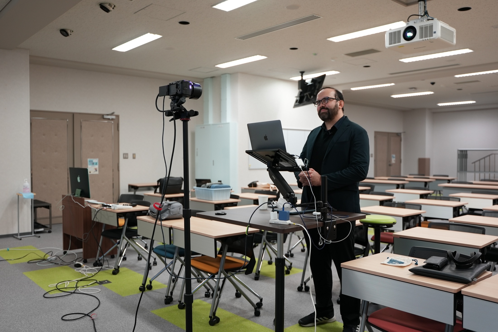
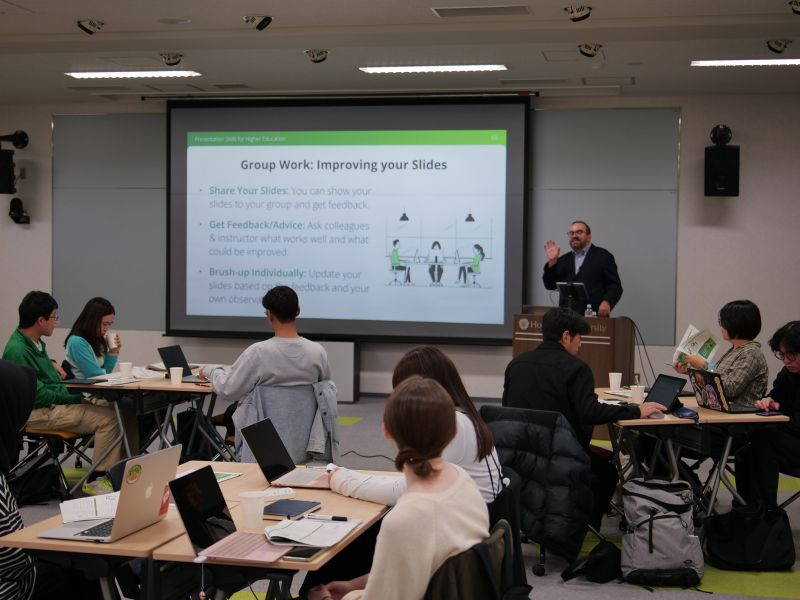
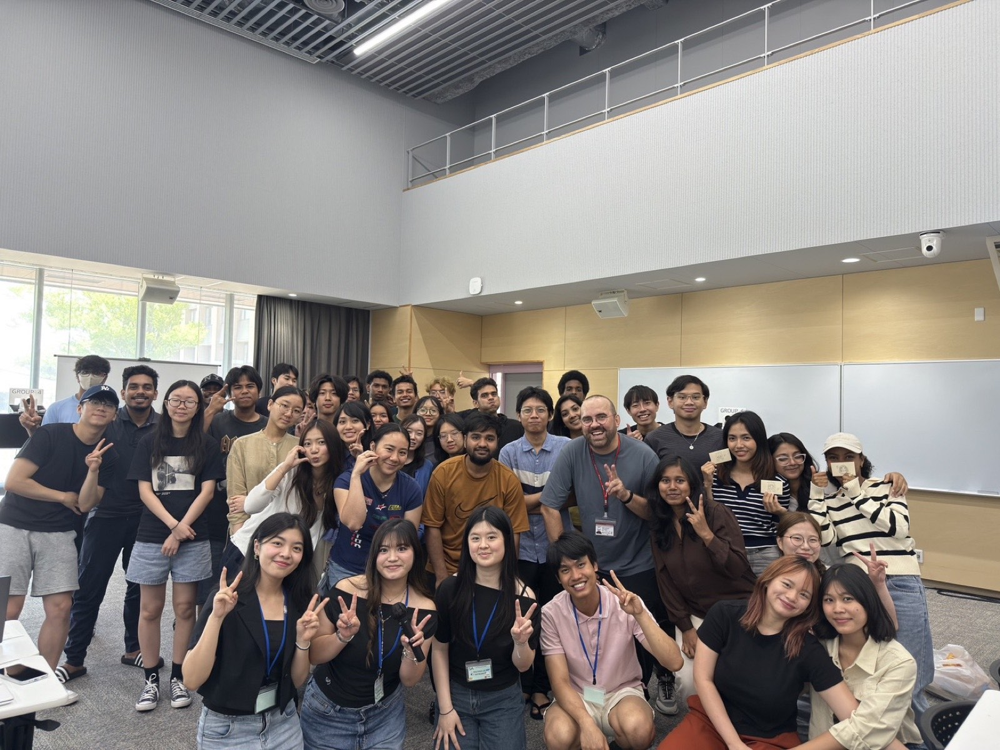

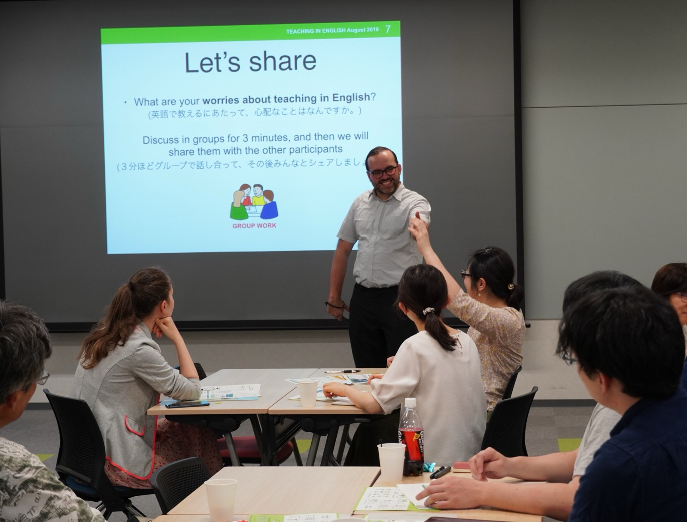
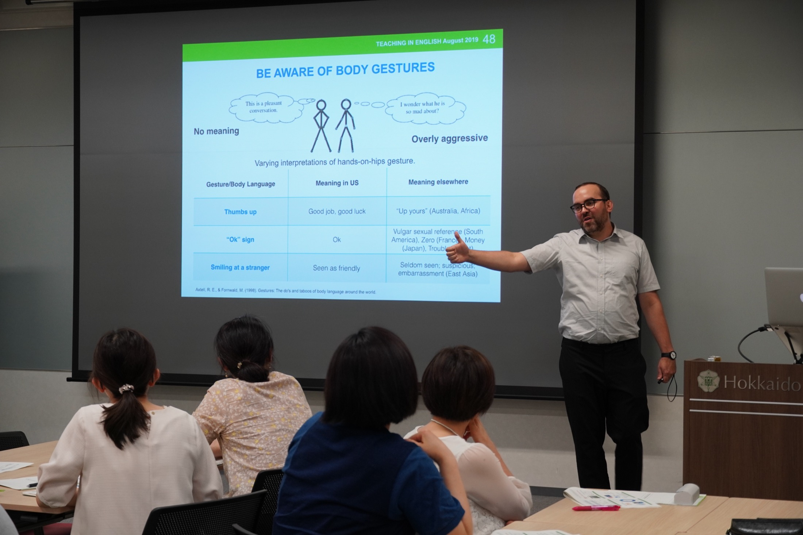


One teaching practice, three settings
Courses provide time for sustained practice. Workshops help a group solve a live problem. Seminars and presentations bring a wider question into view. Together, they show the same teaching practice at different scales.
Credit-bearing classes in intercultural communication, games and media, and higher education give students time to try ideas, reflect, receive feedback, and revise.
See classroom case studiesFocused sessions for faculty, graduate students, and teaching teams turn one recognisable challenge into a usable teaching decision, activity, or plan.
Explore workshop collaborationGuest sessions connect evidence, examples, and a clear question around themes such as EMI, AI, intercultural learning, games, and public communication.
Compare engagement formatsひとつの教育実践、3つの場
授業では継続した実践の時間をつくり、ワークショップでは目の前の課題を扱い、セミナーと講演ではより広い問いを開きます。異なる規模で同じ教育実践を示す3つの場です。
異文化コミュニケーション、ゲームとメディア、高等教育に関する正課授業では、学生が考えを試し、振り返り、フィードバックを受け、改善する時間を得ます。
授業のケーススタディを見る教職員、大学院生、教育チームのための集中的なセッションです。一つの課題を、使える教育上の判断、活動、または計画へと変えます。
ワークショップについて相談するEMI、AI、異文化学習、ゲーム、パブリック・コミュニケーションなどを、根拠、事例、明確な問いとともに扱うゲストセッションです。
形式を比較するJedna praktyka dydaktyczna, trzy środowiska
Kursy dają czas na dłuższą praktykę. Warsztaty pomagają grupie rozwiązać bieżący problem. Seminaria i prezentacje otwierają szersze pytanie. Razem pokazują tę samą praktykę dydaktyczną w różnych skalach.
Akademickie kursy z komunikacji międzykulturowej, gier i mediów oraz szkolnictwa wyższego dają studentom czas na próbowanie pomysłów, refleksję, informację zwrotną i poprawę pracy.
Zobacz studia przypadków z zajęćSkoncentrowane sesje dla kadry, doktorantów i zespołów dydaktycznych zamieniają jedno rozpoznawalne wyzwanie w użyteczną decyzję, aktywność albo plan.
Zobacz, jak zacząć współpracęSesje gościnne łączą dowody, przykłady i wyraźne pytanie wokół EMI, AI, uczenia międzykulturowego, gier i komunikacji publicznej.
Porównaj formaty współpracySelected teaching record
This is not a complete catalogue. It is a short record of how semester-long courses and teaching-development formats put the same principles into practice: clear structure, active participation, reflection, and revision.
Critical incidents, structured dialogue, and reflection help students move from lived experience to interpretation.
Evidence End-of-semester feedback pointed to useful slides, discussion, and reflection activities.
Read the course case study
Students analyse games as cultural material, write real reviews, and develop original game concepts for a public audience.
Evidence The course received a 4.58/5 overall student-survey score; selected work was published by PSX Extreme.
See the course case study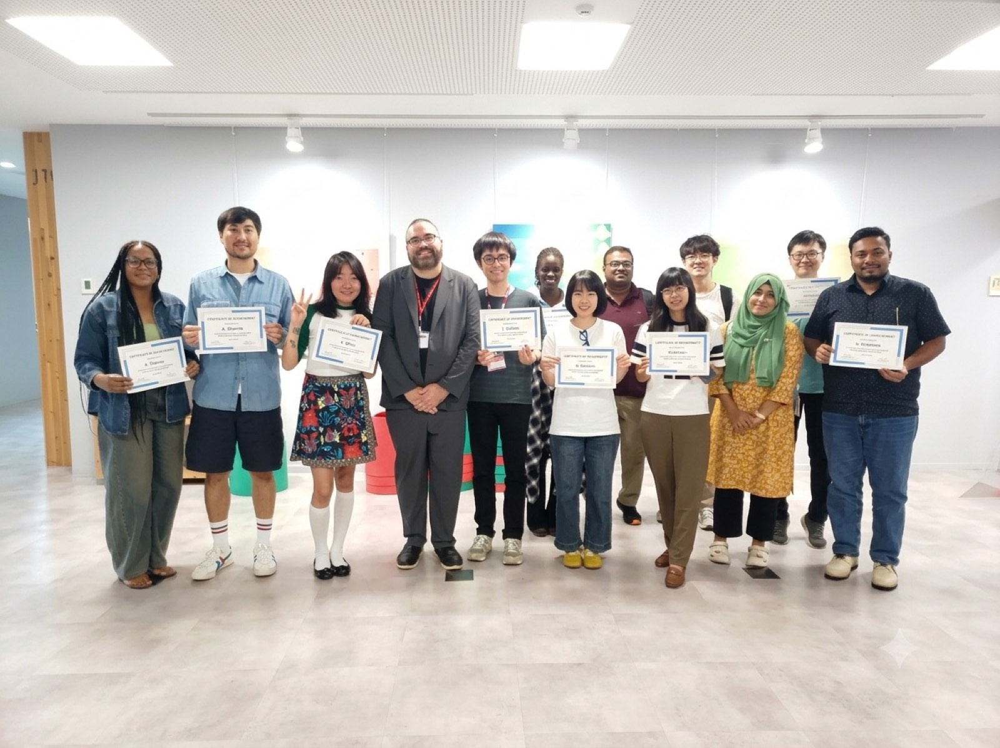
Graduate students turn a teaching idea into a usable class outline, activity, peer rehearsal, and revision.
Evidence Spring 2026 participants completed the series and received certificates; the original materials make the learning sequence visible.
View the original series poster教育実践の記録
これは全授業の一覧ではありません。学期を通じた授業と教育開発の形式で、明確な構成、主体的な参加、振り返り、改善という原則をどう実践しているかを示す短い記録です。
クリティカル・インシデント、構造化された対話、振り返りを通して、学生が経験を解釈へとつなげます。
根拠 学期末の匿名フィードバックでは、スライド、対話、振り返り活動の有用性が挙げられました。
授業のケーススタディを読む
ゲームを文化的な素材として分析し、実際のレビューを書き、一般の読者にも届くゲーム企画をつくります。
根拠 授業全体の学生アンケート評価は 4.58/5。選抜作品は PSX Extreme に掲載されました。
授業のケーススタディを見る大学院生が授業のアイデアを、使える授業概要、活動、ピア・リハーサル、改善へとつなげます。
根拠 2026年春の参加者はシリーズを修了し、修了証を受け取りました。オリジナル資料からは学習の流れも確認できます。
シリーズのポスターを見るWybrane doświadczenie dydaktyczne
To nie jest pełny katalog. To krótki zapis tego, jak kursy semestralne i formaty rozwoju dydaktycznego realizują te same zasady: jasną strukturę, aktywny udział, refleksję i poprawę.
Sytuacje krytyczne, ustrukturyzowany dialog i refleksja pomagają studentom przejść od doświadczenia do interpretacji.
Dowód Anonimowa informacja zwrotna na koniec kursu wskazywała na użyteczne slajdy, dyskusje i aktywności refleksyjne.
Przeczytaj studium przypadku kursu
Studenci analizują gry jako materiał kulturowy, piszą prawdziwe recenzje i rozwijają własne koncepcje gier dla szerszej publiczności.
Dowód Kurs otrzymał 4,58/5 w ogólnej ankiecie studenckiej; wybrane prace opublikował PSX Extreme.
Zobacz studium przypadku kursuDoktoranci zamieniają pomysł na zajęcia w użyteczny plan, aktywność, próbę z grupą i poprawioną wersję.
Dowód Uczestnicy wiosennej edycji 2026 ukończyli serię i otrzymali certyfikaty; oryginalne materiały pokazują też przebieg uczenia się.
Zobacz oryginalny plakat seriiClass sample
This recorded Week 6 session, Game Analysis 3, offers a direct sample of the course in practice. It shows how I frame an analytical question, keep a class moving, and turn games into shared material for observation, argument, and discussion.
Watch the full class sample on YouTube
授業サンプル
第6週の録画「Game Analysis 3」は、授業が実際にどのように進むかを示す短いサンプルです。分析の問いを立て、授業の流れを保ち、ゲームを観察・議論・主張のための共有素材へ変えていく様子を確認できます。
YouTubeで授業サンプル全編を見る
Próbka zajęć
Nagranie z szóstego tygodnia, Game Analysis 3, daje bezpośredni wgląd w to, jak ten kurs działa w praktyce. Pokazuje, jak stawiam pytanie analityczne, utrzymuję rytm zajęć i zamieniam gry we wspólny materiał do obserwacji, argumentacji i dyskusji.
Zobacz pełną próbkę zajęć na YouTube
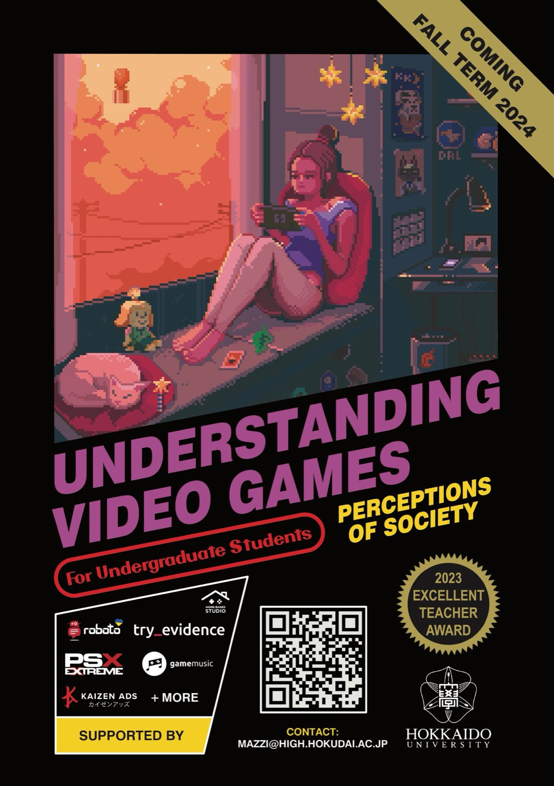
Invitation poster · 2024 募集ポスター・2024年 Plakat zapowiadający · 2024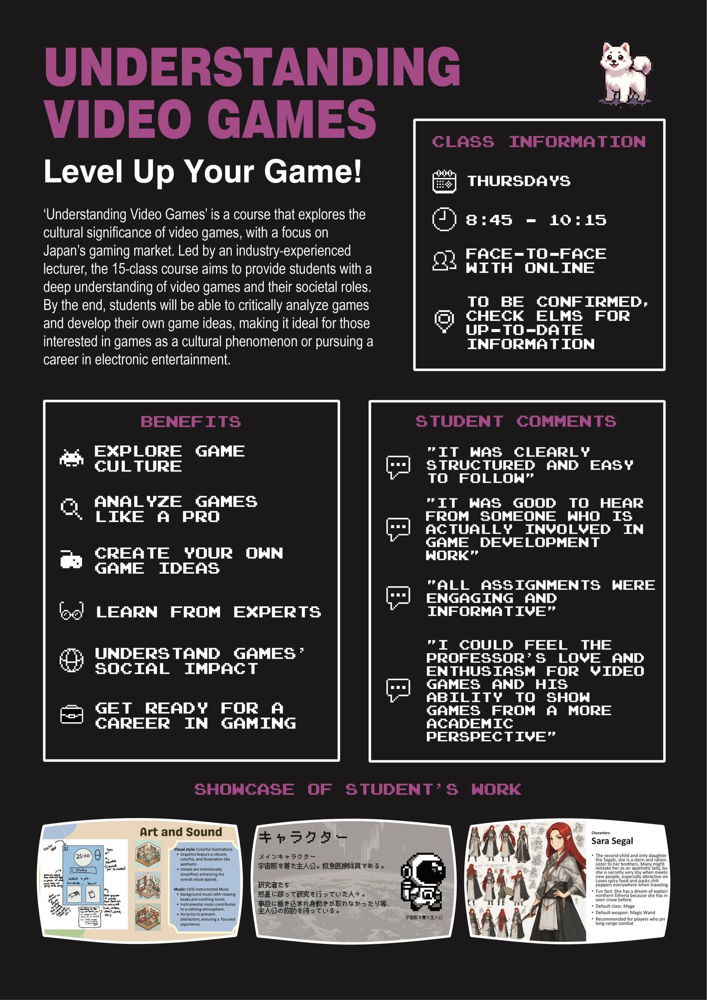
Course map & student evidence 授業の見取り図と学生の声 Mapa kursu i głosy studentówCourse identity · Hokkaido University · 2024
These posters frame games as cultural systems worth reading closely—not simply entertainment to be consumed. Their visual language comes from games, but their promise is academic: analyse how games make meaning, connect them to society, and turn interpretation into reviews, original concepts, and work for a real audience.
The illustrated poster creates curiosity; the information poster makes the pathway, student voices, and examples of student work visible. Together they show how visual communication, curriculum design, and knowledge of the games industry belong to the same teaching practice.
授業のビジュアル・アイデンティティ · 北海道大学 · 2024年
このポスターが示すのは、ゲームを単に消費する娯楽ではなく、注意深く読み解く価値のある文化的システムとして扱う授業です。表現はゲーム文化から借りていますが、約束するのは学術的な学びです。ゲームがどのように意味を生み、社会とどう結びつくかを分析し、その解釈をレビュー、独自の企画、実際の読者に届く成果へ変えていきます。
イラスト版は好奇心を引き出し、情報版は学習の道筋、学生の声、成果物の例を見える形にします。二つを合わせることで、ビジュアル・コミュニケーション、カリキュラム設計、ゲーム業界への知見が、一つの教育実践としてつながります。
Tożsamość kursu · Hokkaido University · 2024
Te plakaty przedstawiają gry jako systemy kulturowe, które warto uważnie czytać, a nie wyłącznie konsumować jako rozrywkę. Ich język wizualny pochodzi ze świata gier, lecz obietnica jest akademicka: analizować, jak gry tworzą znaczenia, łączyć je ze społeczeństwem, a interpretację przekładać na recenzje, autorskie koncepcje i pracę dla prawdziwego odbiorcy.
Plakat ilustracyjny budzi ciekawość; wersja informacyjna pokazuje drogę przez kurs, głosy studentów i przykłady ich prac. Razem dowodzą, że komunikacja wizualna, projektowanie programu i znajomość branży gier są częściami tej samej praktyki dydaktycznej.
Start with the problem
Tell me who is in the room, what feels difficult now, and what you would like to be different afterwards. I will suggest a format, a realistic focus, and a concrete outcome for the session.
A simple way to begin
A short email is enough. There is no formal request form.
課題から始める
誰が参加するのか、今どこに難しさがあるのか、終わったあと何が変わっていてほしいのかを教えてください。形式、現実的な焦点、そして参加者が持ち帰る成果を提案します。
相談の進め方
短いメールで十分です。正式な申請書は必要ありません。
Zacznijmy od problemu
Napisz mi, kto będzie w sali, co obecnie jest trudne i co chciałbyś, aby po sesji było inne. Zaproponuję format, realistyczne skupienie oraz konkretny rezultat spotkania.
Prosty początek
Wystarczy krótki e-mail. Nie ma formalnego formularza zgłoszeniowego.
Workshop feedback
These are anonymised workshop responses, with translations where noted. In the October 2024 Presentation Skills for Higher Education workshop, 12 of 13 respondents reported positive overall satisfaction; 11 of 13 expected the session to inform a change in their future practice.
“The way it broke down complex presentation skills into actionable tips made it much easier to understand and apply.”
Anonymous participant · Presentation Skills for Higher Education · 2024
“The use of breakout rooms was a helpful way of keeping people engaged.”
Anonymous participant · Online Communication workshop · 2020 · translated from Japanese
ワークショップのフィードバック
以下は匿名のワークショップ回答です。必要に応じて翻訳を付けています。2024年10月のPresentation Skills for Higher Educationでは、13人中12人が全体的な満足度を肯定的に評価し、13人中11人が今後の実践の変化につながると答えました。
「複雑なプレゼンテーションのスキルが実行可能なヒントに分解されていたので、理解しやすく実践しやすかったです。」
匿名の参加者・Presentation Skills for Higher Education・2024年・英語からの翻訳
「ブレークアウトルームを使って飽きさせない工夫がされており参考になった。」
匿名の参加者・オンライン・コミュニケーション研修・2020年
Opinie z warsztatów
To anonimowe odpowiedzi z ankiet warsztatowych; tam, gdzie trzeba, podano tłumaczenie. Podczas warsztatu Presentation Skills for Higher Education w październiku 2024 r. 12 z 13 osób pozytywnie oceniło ogólną satysfakcję, a 11 z 13 uznało, że sesja wpłynie na ich przyszłą praktykę.
„Podział złożonych umiejętności prezentacyjnych na możliwe do zastosowania wskazówki znacznie ułatwił ich zrozumienie i wykorzystanie.”
Anonimowy uczestnik · Presentation Skills for Higher Education · 2024 · tłumaczenie z angielskiego
„Przemyślane użycie pokoi breakout było pomocnym sposobem na utrzymanie zaangażowania uczestników.”
Anonimowy uczestnik · warsztat o komunikacji online · 2020 · tłumaczenie z japońskiego

A working trace
This original APU Pre-FD poster represents the kind of practical learning design behind the formats on this page: a real audience, a clear sequence, and a result participants can carry back into their teaching.
I design posters, slides, and teaching materials myself, using Adobe and other creative tools alongside the learning design. The visual work is not an afterthought: it helps participants see what a session is for, how it will unfold, and why it is worth entering. Keeping that creative craft inside my teaching practice is part of making learning feel clear, considered, and inviting.
Open the original poster実践の痕跡
このAPU Pre-FDシリーズのオリジナルポスターは、このページの形式を支える実践的な学習デザインを表しています。実在する参加者、明確な流れ、そして参加者が自分の教育へ持ち帰れる成果です。
ポスター、スライド、教材は、学習デザインと並行して自分で制作しています。Adobeをはじめとするクリエイティブツールを使うのは、見た目を整えるためだけではありません。セッションの目的、進み方、参加する意味を一目で伝えるためです。この創造的な仕事も、分かりやすく、よく考えられ、参加したくなる学びを設計する大切な一部です。
オリジナルポスターを見るŚlad pracy
Ten oryginalny plakat serii Pre-FD na APU pokazuje rodzaj praktycznego projektowania, który stoi za formatami z tej strony: prawdziwi odbiorcy, jasna sekwencja pracy i rezultat, który uczestnicy mogą zabrać do własnej dydaktyki.
Plakaty, slajdy i materiały dydaktyczne projektuję samodzielnie, używając Adobe oraz innych narzędzi kreatywnych równolegle z projektowaniem uczenia się. Warstwa wizualna nie jest dodatkiem: pomaga uczestnikom od razu zobaczyć, po co jest sesja, jak będzie przebiegać i dlaczego warto w niej uczestniczyć. Ta kreatywna praca jest dla mnie częścią projektowania jasnego, przemyślanego i zapraszającego uczenia się.
Otwórz oryginalny plakatTeaching materials in practice
These are selected pages from original decks I designed and delivered. They show how visual structure, guided reflection, and visible student work support the learning process.
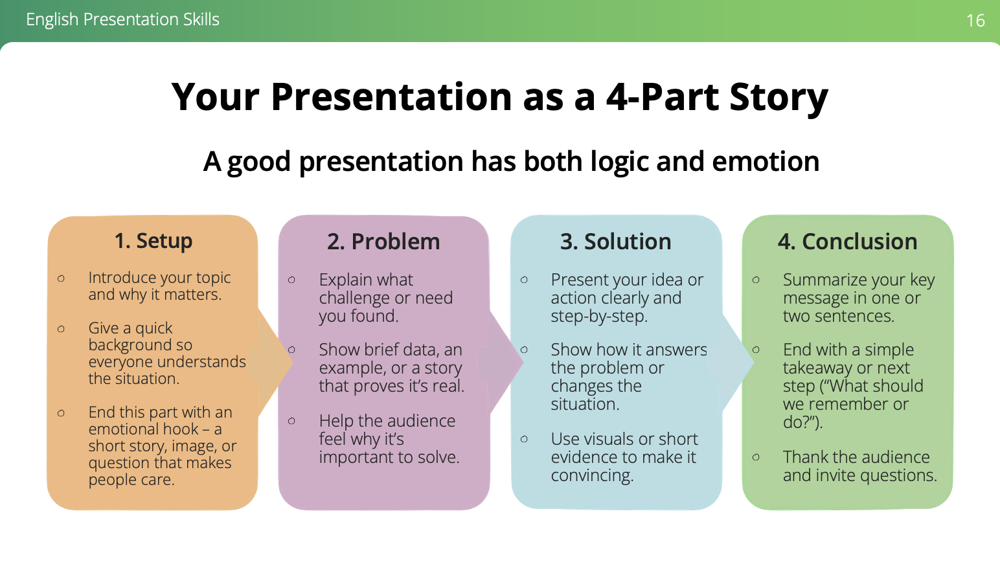
A four-part structure turns presentation advice into a memorable planning tool that participants can use immediately.
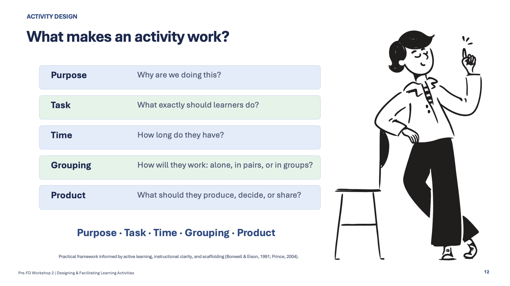
Purpose, task, time, grouping, and product give participants a practical test for whether an activity will be clear and workable.
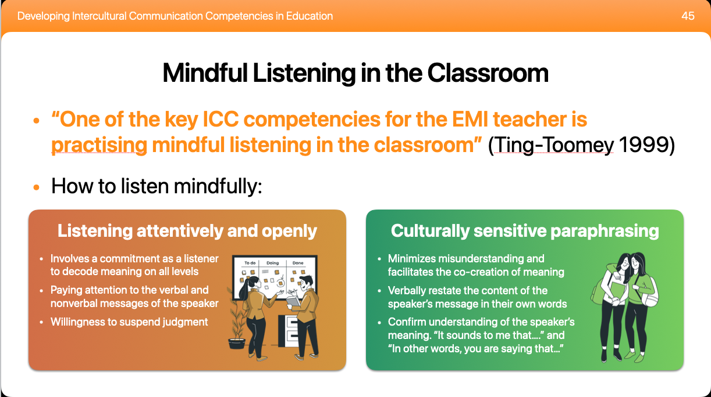
An intercultural principle becomes language people can practise: attend openly, then paraphrase with cultural sensitivity.
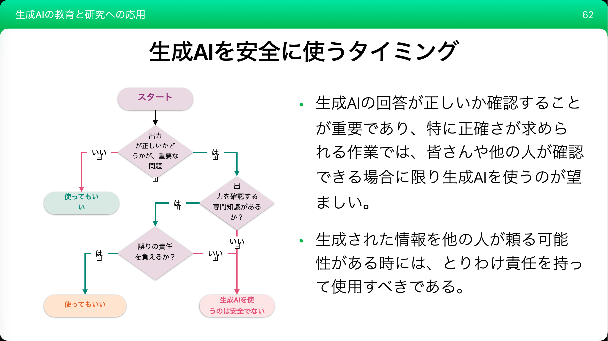
A decision flow replaces blanket rules with verification, responsibility, and attention to the stakes of the task.
Engagement Formats
| Format | Works best when | Participants leave with | Typical setting |
|---|---|---|---|
| Course One semester |
A programme needs sustained learning: time to practise, reflect, receive feedback, and revise. | Documented work, reflection, and a record of developing judgment. | Credit-bearing undergraduate or graduate course. |
| Workshop 90 minutes - half day |
A specific teaching problem needs to be worked on, not merely discussed. | A tested activity, revised class component, or implementation plan. | Faculty meeting, CTL programme, department workshop. |
| Seminar 45-90 minutes |
A group needs shared language and structured discussion around a question or theme. | A framework, prompted questions, and directions for further work. | Graduate programme, reading group, professional-learning event. |
| Presentation 30-60 minutes |
An institution needs a focused expert perspective, evidence, and a clear provocation. | A concise argument, examples, and a moderated Q&A. | Conference, public lecture, staff-development day. |
| Series / Pre-FD Two or more sessions |
People need to try an idea, return to it, and improve their practice over time. | A draft, rehearsal, feedback, and a revised version. | Pre-FD or staff-development cohort. |
Areas of Expertise
What Participants Produce
Facilitation Approach
I learned this approach while working with real constraints: multilingual groups, nervous first-time teachers, faculty redesigning courses, and students planning international space projects. The subject changes; the need for clear structure and room to think does not.
I combine short input with templates, discussion, rehearsal, and feedback. In the Ritsumeikan Space Management Program, for example, students used communication styles, leadership observation, and presentation practice to work across institutional and cultural differences.
Evidence in Practice
Sessions addressed teaching in English, intercultural communication, syllabus design, and preparing for generative AI in the classroom.
A university course connecting critical game analysis, social context, media literacy, and industry-like creative tasks received a 4.58/5 overall student-survey score.
Mixed Ritsumeikan and APU cohorts worked on leadership, communication styles, presentations, feedback, and international collaboration around space-sector challenges.
ご依頼いただける形式
| 形式 | 適している場面 | 持ち帰るもの | 主な場 |
|---|---|---|---|
| 授業 1学期 | 試し、振り返り、フィードバックを受け、改善するための継続した学びが必要なとき。 | 記録された成果物、振り返り、自らの判断が育つ過程。 | 単位認定の学部・大学院授業。 |
| ワークショップ 90分〜半日 | 特定の教育課題を、話すだけでなく実際に検討したいとき。 | 試行済みの活動、改善した授業要素、または実施計画。 | 教職員会議、教育開発センターのプログラム、学部ワークショップ。 |
| セミナー 45〜90分 | 問い・テーマを共有し、構造化された対話を行いたいとき。 | 考えるための枠組み、問い、次の探究の方向。 | 大学院プログラム、読書会、専門職学習イベント。 |
| 講演 30〜60分 | 専門的な視点、根拠、明確な問題提起が必要なとき。 | 簡潔な論点、事例、質疑応答。 | 学会、公開講演、教職員研修日。 |
| シリーズ／Pre-FD 2回以上 | アイデアを試し、持ち帰り、時間をかけて実践を改善したいとき。 | 草案、リハーサル、フィードバック、改善版。 | Pre-FDまたは教職員研修コホート。 |
専門領域
参加者がつくるもの
ファシリテーションの考え方
多言語のグループ、初めて教える人の不安、授業を再設計する教員、国際的な宇宙プロジェクトに取り組む学生など、現実の制約とともに働く中で、この進め方を学びました。テーマは変わっても、明確な構造と考える余白は欠かせません。
短いインプットに、テンプレート、対話、リハーサル、フィードバックを組み合わせます。立命館スペースマネジメントプログラムでは、コミュニケーション・スタイル、リーダーシップの観察、プレゼンテーション練習を用いて、制度と文化の違いを越えた協働を支えています。
実践における根拠
英語で教えること、異文化コミュニケーション、シラバス設計、教室における生成AIへの備えを扱いました。
批判的ゲーム分析、社会的文脈、メディア・リテラシー、創造的な実務型課題を結ぶ授業は、学生アンケート総合4.58/5を得ました。
立命館大学とAPUの混成コホートが、宇宙分野の課題を題材に、リーダーシップ、コミュニケーション・スタイル、プレゼンテーション、フィードバック、国際協働に取り組みました。
Formaty współpracy
| Format | Najlepiej działa, gdy | Uczestnicy wychodzą z | Typowy kontekst |
|---|---|---|---|
| Kurs Jeden semestr |
Program potrzebuje dłuższego procesu uczenia się: czasu na próbę, refleksję, informację zwrotną i poprawę. | Udokumentowaną pracą, refleksją i zapisem rozwijającego się osądu. | Punktowany kurs licencjacki albo magisterski. |
| Warsztat 90 minut - pół dnia |
Trzeba przepracować konkretny problem dydaktyczny, a nie tylko o nim porozmawiać. | Przetestowaną aktywnością, poprawionym elementem zajęć albo planem wdrożenia. | Spotkanie kadry, program CTL, warsztat dla katedry. |
| Seminarium 45-90 minut |
Grupa potrzebuje wspólnego języka i ustrukturyzowanej rozmowy wokół pytania albo tematu. | Ramą myślenia, pytaniami do dalszej pracy i kierunkami rozwoju. | Program dla doktorantów, grupa czytelnicza, wydarzenie rozwojowe. |
| Prezentacja 30-60 minut |
Instytucja potrzebuje skoncentrowanej perspektywy eksperckiej, dowodów i wyraźnej tezy. | Zwięzłą argumentacją, przykładami i moderowaną sesją pytań i odpowiedzi. | Konferencja, wykład otwarty, dzień rozwoju kadry. |
| Seria / Pre-FD Dwie lub więcej sesji |
Trzeba wypróbować pomysł, wrócić do niego i ulepszać praktykę w czasie. | Szkicem, próbą, informacją zwrotną i poprawioną wersją. | Grupa Pre-FD albo program rozwoju dydaktycznego kadry. |
Obszary ekspertyzy
Co tworzą uczestnicy
Podejście do facylitacji
Tego podejścia nauczyłem się, pracując z prawdziwymi ograniczeniami: wielojęzycznymi grupami, zestresowanymi początkującymi nauczycielami, kadrą przebudowującą kursy i studentami planującymi międzynarodowe projekty kosmiczne. Temat się zmienia; potrzeba jasnej struktury i przestrzeni do myślenia pozostaje.
Łączę krótkie wprowadzenie z szablonami, rozmową, próbą i informacją zwrotną. W Ritsumeikan Space Management Program studenci wykorzystywali style komunikacji, obserwację przywództwa i ćwiczenie prezentacji, aby pracować ponad różnicami instytucjonalnymi i kulturowymi.
Dowody w praktyce
Sesje dotyczyły nauczania po angielsku, komunikacji międzykulturowej, projektowania sylabusa i przygotowania do generatywnej AI w klasie.
Kurs łączył krytyczną analizę gier, kontekst społeczny, kompetencje medialne i zadania kreatywne zbliżone do pracy w branży; otrzymał średnią 4,58/5 w ankiecie studentów.
Mieszane grupy Ritsumeikan i APU pracowały nad przywództwem, stylami komunikacji, prezentacjami, informacją zwrotną i międzynarodową współpracą wokół wyzwań sektora kosmicznego.
Try the method
This is a compact version of the framework I use in class-design and Pre-FD workshops. Choose a real classroom problem, then shape one workable response through purpose, task, time, grouping, and a visible product.
02
Each choice is small. Together, they make the activity legible to you and to the people taking part.
03
Working activity
Inside the room
I am most myself when people begin thinking aloud, testing an idea, and finding language for something they could not quite name before.
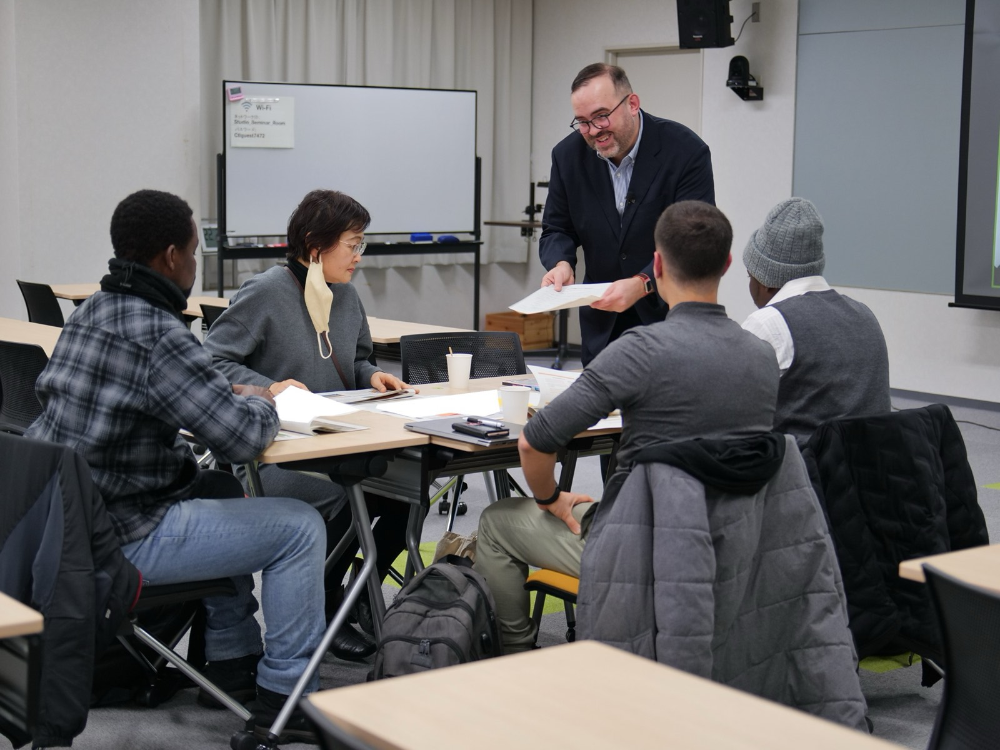

Collaboration
I can adapt the topic, examples, timing, and participant outputs to your programme, teaching context, and audience.
Download the one-page workshop brief